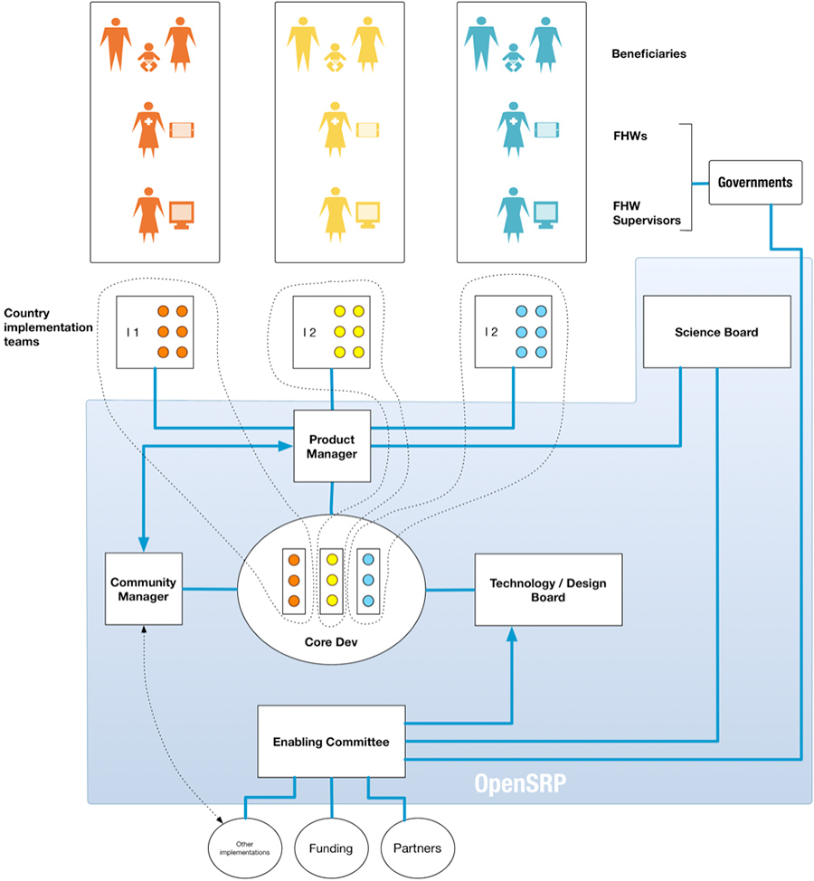

The clients (i.e., men, women, and children) to whom the Frontline Health Workers (FHWs) provide routine primary health care. The ultimate goal of OpenSRP is to improve the health of these beneficiaries.
The direct users of the OpenSRP platform/application. These OpenSRP users are government-trained / employed frontline health workers who are usually the first point of contact between a beneficiary and a country’s public health system.
The direct managers/supervisors of the FHWs. The FHW Supervisors usually do not provide direct care to beneficiaries; rather, they oversee a group of FHWs and are responsible for reviewing data from the FHWs and aggregating data to the next level in the government health care system (e.g., to district or province level).
Each THRIVE OpenSRP implementation (Pakistan, Bangladesh, Indonesia) is run by that country’s implementation team, which is led by a country director or coordinator. The country implementation team conducts the formative and field research for the THRIVE research study protocol and oversees the implementation of their country-adapted OpenSRP platform amongst the selected FHWs at their country research site.
Composed of the PIs of each country implementation site, their in-country research leads, and WHO coordinators, and the research leads in-country, the science board oversees the THRIVE research study implementation and ensures the research requirements for their site are communicated to the PM. They ensure each implementation of OpenSRP has health content that is vetted against global health standards.
The PM(s) are responsible for balancing the needs of the different country implementations with the overall product roadmap and strategic direction of the OpenSRP platform product. They communicate directly with the country implementation teams and the core dev team to ensure needs and expectations are communicated clearly. The product manager is accountable to both the implementation teams and the enabling committee.
Composed of individual programmers from each country implementation site. They work on core OpenSRP platform features and improvements as well as country-specific requirements. One idea is to rotate developers between core OpenSRP dev work and their country’s specific implementation requirements.
Composed of the tech leads from each country implementation site and senior architects; the role of the tech board is to make broad architecture decisions about the strategic direction and future development of OpenSRP. They are the final say in terms of architecture decisions. The Design Board oversees the various design implementations and ensures an overall quality design standard.
These committee members ensure that all other members in the THRIVE governance model have the means to carry out the product development and research priorities. They are responsible for liaising with all of the THRIVE partners, potential new implementation teams, funders, and governments. They are the final say if disagreements and/or competing interests cannot be resolved by the PM(s). In short, the role of the Enabling Committee is to make sure each board / committee has the resources to successfully develop and implement OpenSRP at each THRIVE country site.